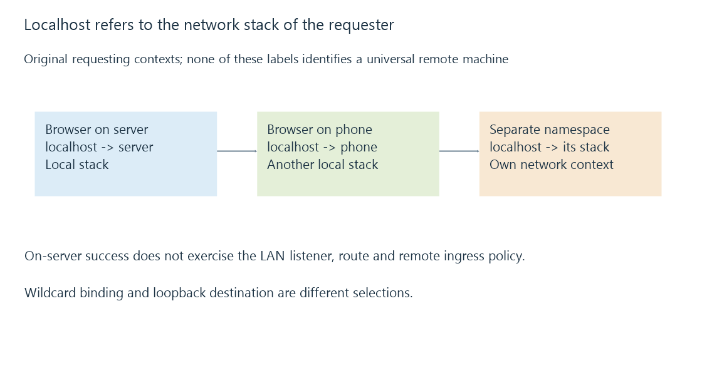

Loopback addresses and the meaning of localhost
Loopback addresses reach the requesting host’s own network stack, making localhost useful for same-host access while proving little about another device’s server path.
A browser on the server opens http://localhost:8096/ successfully. The same text entered on a phone does not reach that server.
The hostname stayed the same. The machine interpreting it changed.
Localhost belongs to the requester
Loopback traffic stays within the requesting host’s network stack. IPv4 reserves 127.0.0.0/8 for loopback; 127.0.0.1 is the familiar example. IPv6 uses ::1.
| Requester | Destination localhost refers to |
|---|---|
| Browser on the Emby machine | That machine’s network stack |
| Browser on the phone | The phone’s network stack |
| Proxy with its own network namespace | The proxy’s namespace-local stack |
The phone does not interpret localhost as “the Emby server I was thinking about.” It needs an address or name for a reachable server endpoint.

A loopback connection tests a short path
An on-server success can establish that a listener and application operation work through that local path. It does not exercise the LAN interface, remote device route or inbound firewall policy for another machine.
If the service binds only to loopback, remote clients cannot reach that listener through the server’s LAN address. An all-interface binding is a different selection, still subject to service and firewall policy.
Emby’s connectivity documentation uses localhost for local dashboard access and separately identifies the address other devices can use.
A proxy changes which process is the requester
A same-host reverse proxy may reach Emby through loopback while accepting client connections on another interface. That is a deliberate two-connection path.
If the proxy instead lives in another machine or isolated network namespace, its loopback destination is no longer the Emby machine’s stack. It needs the appropriate origin endpoint in that context.
Reverse proxies develops those independent sides.
Wildcard and loopback have different meanings
A listener bound to 0.0.0.0 is expressing an IPv4 binding choice across interfaces. It is not the IPv4 loopback address, and it is not a destination to advertise to a phone.
Similarly, IPv6’s unspecified :: and loopback ::1 have different roles. Whether one wildcard listener also accepts another address family depends on its socket/platform settings.
See Also
- Network ports, listeners and connection endpoints
- Reverse proxies and the two-sided server path
- Emby server discovery and advertised endpoints